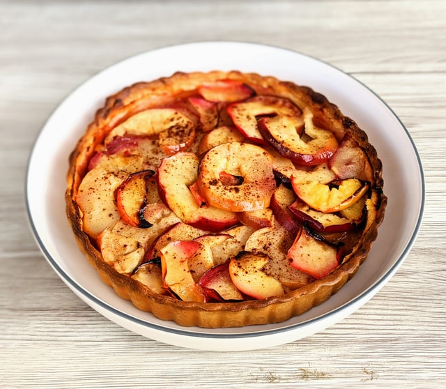

Nutrition Facts
Per Serving: 213 calories; protein 2.6g; carbohydrates 33.8g; fat 8.3g; cholesterol 15.5mg; sodium 208.9mg. Full Nutrition
Step 1Preheat oven to 350 degrees F (175 degrees C). Grease and flour a fluted tube pan (such as Bundt®)
Step 2Sift flour, baking soda, cinnamon, and salt together in a bowl. Set aside
Step 3Mix sugar, egg, and oil together in another bowl. Stir in the flour mixture just until combined; fold in apple, walnuts, and raisins
Step 4Bake in the preheated oven until a toothpick inserted into the cake comes out clean, about 1 hour
Cook's Note:
You can use dates instead of raisins, and any kind of chopped nut that you prefer